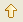
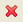

This page gives an overview of the Ruby Gems View.
Contents |
Introduction
Use the Ruby Gems View to install and manage your gems. The Ruby Gems View acts like a GUI over top of the 'gem' command line utility.
The Ruby Gems View contains the following information about your installed gems:
- Name
- Versions
- Short description
{kind=link}
Instructions
You can both manage your gems and install new gems using the Ruby Gems View.
Managing gems
To manage your gems using the Ruby Gems View:
- To upgrade the selected local gem, click the Upgrade button .
- To refresh the local listing, click the Refresh button
 .This is helpful for when the View has become out of sync because you installed gems via the command-line.
.This is helpful for when the View has become out of sync because you installed gems via the command-line.
- To delete the currently selected gem, click the Delete button .
- To install a new gem, click the Install button .
{kind=link}
{kind=link}
{kind=link}
Installing gems
To install a new gem:
- Click the Install button to open a list of all remote gems available (shown below).
- In the Gem Name field, type a few letters from the name of the gem that you want to install. This will filter the list for you.
- Select the gem that you want to install.
- Click OK.
{kind=link}
The Ruby Gems View installs the selected gem for you.
Related Topics
Categories: AptanaHelp | RadRails | RDT